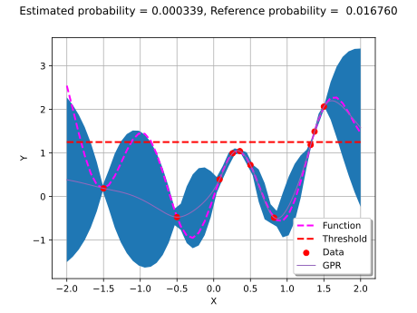
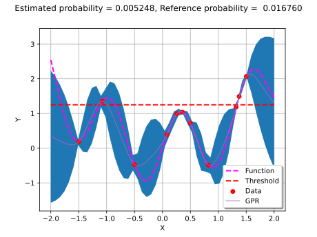

Note
Go to the end to download the full example code.
Gaussian Process-based active learning for reliability¶
# sphinx_gallery_thumbnail_number = 13
In this example, we show how to sequentially add new points to a Gaussian Progress Regression model (GPR). The goal is to improve the predictivity of the surrogate model for reliability estimation. This kind of strategy is called “active learning”. In order to create simple graphs, we consider a 1-d function.
Create the function and the design of experiments¶
import openturns as ot
import openturns.viewer as otv
import numpy as np
Define the function, the threshold above which the system is considered in failure, and the input probability distribution.
g = ot.SymbolicFunction(["x"], ["0.5*x^2 + sin(5*x)"])
threshold = 1.25
distribution = ot.Normal(0, 0.4)
Create the design of experiments.
dimension = 1
DoESize = 4
xMin = -2.0
xMax = 2.0
X_distr = ot.Uniform(xMin, xMax)
X = ot.LHSExperiment(X_distr, DoESize, False, False).generate()
Y = g(X)
We plot the limit state function, the initial design of experiments and the failure threshold.
thresholdFunction = ot.Curve([xMin, xMax], [threshold] * 2)
thresholdFunction.setLineStyle("dashed")
thresholdFunction.setColor("red")
thresholdFunction.setLineWidth(2)
thresholdFunction.setLegend("Failure threshold")
data = ot.Cloud(X, Y)
data.setColor("red")
data.setPointStyle("circle")
data.setLegend("Design of Experiments")
graphFunction = g.draw(xMin, xMax)
graphFunction.setColors(["magenta"])
graphFunction.setLegends(["Limit state function"])
graph = ot.Graph()
graph.add(graphFunction)
graph.add(thresholdFunction)
graph.add(data)
graph.setLegendPosition("lower right")
graph.setAxes(True)
graph.setGrid(True)
view = otv.View(graph)
Define the reliability analysis¶
We define the event and estimate the reference failure probability with Monte-Carlo algorithm.
vect = ot.RandomVector(distribution)
g = ot.MemoizeFunction(g)
G = ot.CompositeRandomVector(g, vect)
event = ot.ThresholdEvent(G, ot.Greater(), threshold)
experiment = ot.MonteCarloExperiment()
algo = ot.ProbabilitySimulationAlgorithm(event, experiment)
algo.setMaximumCoefficientOfVariation(0.1)
algo.setMaximumOuterSampling(int(1e5))
algo.run()
result = algo.getResult()
probability = result.getProbabilityEstimate()
sampleX = g.getInputHistory()
print("Reference probability on the real function =", probability)
Reference probability on the real function = 0.016759776536312866
Create the algorithms¶
def createMyBasicGPR(X, Y):
"""
Create a Gaussian Process from a pair of X and Y samples.
We use a 3/2 Matérn covariance model and a constant trend.
"""
basis = ot.ConstantBasisFactory(dimension).build()
covarianceModel = ot.MaternModel([1.0], 1.5)
fitter = ot.GaussianProcessFitter(X, Y, covarianceModel, basis)
fitter.run()
algo = ot.GaussianProcessRegression(fitter.getResult())
algo.run()
gprResult = algo.getResult()
return gprResult
def linearSample(xmin, xmax, npoints):
"""Returns a sample created from a regular grid
from xmin to xmax with npoints points."""
step = (xmax - xmin) / (npoints - 1)
rg = ot.RegularGrid(xmin, step, npoints)
vertices = rg.getVertices()
return vertices
def plotMyBasicGPR(
gprResult, xMin, xMax, X, Y, event, sampleX, refProbability, level=0.95
):
"""
Given a gaussian process result, plot the data, the GP metamodel
and a confidence interval.
"""
meta = gprResult.getMetaModel()
graphKriging = meta.draw(xMin, xMax)
graphKriging.setLegends(["GPR"])
# Create a grid of points and evaluate the function and the kriging
nbpoints = 50
xGrid = linearSample(xMin, xMax, nbpoints)
yFunction = g(xGrid)
yKrig = meta(xGrid)
# Compute the conditional covariance
if event.getOperator().compare(1, 2):
proba = (
np.sum(np.array(gprResult.getMetaModel()(sampleX)) < event.getThreshold())
/ sampleX.getSize()
)
else:
proba = (
np.sum(np.array(gprResult.getMetaModel()(sampleX)) > event.getThreshold())
/ sampleX.getSize()
)
gpcc = ot.GaussianProcessConditionalCovariance(gprResult)
conditionalVariance = gpcc.getConditionalMarginalVariance(xGrid)
conditionalSigma = np.sqrt(conditionalVariance)
# Compute the quantile of the Normal distribution
alpha = 1 - (1 - level) / 2
quantileAlpha = ot.DistFunc.qNormal(alpha)
# Draw the bounds
dataLower = [
yKrig[i, 0] - quantileAlpha * conditionalSigma[i, 0] for i in range(nbpoints)
]
dataUpper = [
yKrig[i, 0] + quantileAlpha * conditionalSigma[i, 0] for i in range(nbpoints)
]
# Compute the Polygon graphics
boundsPoly = ot.Polygon.FillBetween(xGrid.asPoint(), dataLower, dataUpper)
boundsPoly.setLegend("95% bounds")
# Plot the function
graphFonction = ot.Curve(xGrid, yFunction)
graphFonction.setLineStyle("dashed")
graphFonction.setColor("magenta")
graphFonction.setLineWidth(2)
graphFonction.setLegend("Function")
thresholdFunction = ot.Curve([xMin, xMax], [event.getThreshold()] * 2)
thresholdFunction.setLineStyle("dashed")
thresholdFunction.setColor("red")
thresholdFunction.setLineWidth(2)
thresholdFunction.setLegend("Threshold")
# Draw the X and Y observed
cloudDOE = ot.Cloud(X, Y)
cloudDOE.setPointStyle("circle")
cloudDOE.setColor("red")
cloudDOE.setLegend("Data")
# Assemble the graph
graph = ot.Graph()
graph.add(boundsPoly)
graph.add(graphFonction)
graph.add(thresholdFunction)
graph.add(cloudDOE)
graph.add(graphKriging)
graph.setLegendPosition("lower right")
graph.setAxes(True)
graph.setGrid(True)
graph.setTitle(
"Estimated probability = %f, Reference probability = %f"
% (proba, refProbability)
)
graph.setXTitle("X")
graph.setYTitle("Y")
return graph
We start by creating the initial Gaussian Process Regressor model ![\hat{\mathcal{M}}]() on the 4 points in the design of experiments.
We estimate the probability on this surrogate model and compare with the reference probability computed on the real limit state function.
on the 4 points in the design of experiments.
We estimate the probability on this surrogate model and compare with the reference probability computed on the real limit state function.
gprResult = createMyBasicGPR(X, Y)
graph = plotMyBasicGPR(gprResult, xMin, xMax, X, Y, event, sampleX, probability)
view = otv.View(graph)
Active learning Gaussian Process Regressor to sequentially add new points¶
To sequentially add the new points, the “U criterion” is used.
It consists in finding the new point as the sample ![\mathbf{x}]() in the Monte-Carlo experiment that minimizes the following expression:
in the Monte-Carlo experiment that minimizes the following expression:
![\frac{ \left| T - \hat{\mathcal{M}} ( \mathbf{x}) \right|}{\hat{\sigma}(\mathbf{x})}]() with
with ![\hat{\sigma}(\mathbf{x})]() the square root of the marginal covariance of the Gaussian Process evaluated on , and
the square root of the marginal covariance of the Gaussian Process evaluated on , and ![T]() the event threshold (here 1.5)
the event threshold (here 1.5)
def getNewPoint(X, gprResult, threshold):
"""
Returns a new point to be added to the design of experiments.
This point maximizes the U criterion.
"""
gpcc = ot.GaussianProcessConditionalCovariance(gprResult)
response = gprResult.getMetaModel()(X)
conditionalVariance = gpcc.getConditionalMarginalVariance(X)
criterion = np.abs(
ot.Sample([ot.Point([event.getThreshold()])] * X.getSize()) - response
) / np.sqrt(conditionalVariance + 1e-12)
iMaxU = int(np.argmin(criterion))
xNew = X[iMaxU]
return xNew
We first call getNewPoint to get a point to add to the design of experiments.
xNew = getNewPoint(sampleX, gprResult, event.getThreshold())
print(xNew)
[0.821871]
Then we evaluate the function on the new point and add it to the training design of experiments.
yNew = g(xNew)
X.add(xNew)
Y.add(yNew)
We now plot the updated Gaussian Process Regressor.
gprResult = createMyBasicGPR(X, Y)
graph = plotMyBasicGPR(gprResult, xMin, xMax, X, Y, event, sampleX, probability)
view = otv.View(graph)
The algorithm added in the domain.
for GPRStep in range(10):
xNew = getNewPoint(sampleX, gprResult, event)
yNew = g(xNew)
X.add(xNew)
Y.add(yNew)
gprResult = createMyBasicGPR(X, Y)
graph = plotMyBasicGPR(gprResult, xMin, xMax, X, Y, event, sampleX, probability)
otv.View(graph)
- 
- 

We can see that the metamodel only needs to be accurate near the event threshold to retrieve a precise estimation probability of failure. With only 10 points evaluated on the real limit state function, the metamodel accuracy is sufficient to estimate the failure probability. Indeed, the estimated probability is very close to the reference probability. This kind of active learning strategies allows one to save a large number of simulations.
Conclusion¶
The current example presents the naive implementation on the creation of a sequential design of experiments (active learning) based on GPR for failure probability estimation. See Modules for module ot-ak that implements active learning algorithms for reliability. More practical algorithms are presented in the following references.
Echard, B., Gayton, N., & Lemaire, M. (2011). AK-MCS: an active learning reliability method combining Kriging and Monte Carlo simulation. Structural Safety, 33(2), 145-154.
Echard, B. (2012). Assessment by kriging of the reliability of structures subjected to fatigue stress, Université Blaise Pascal, PhD thesis
otv.View.ShowAll()